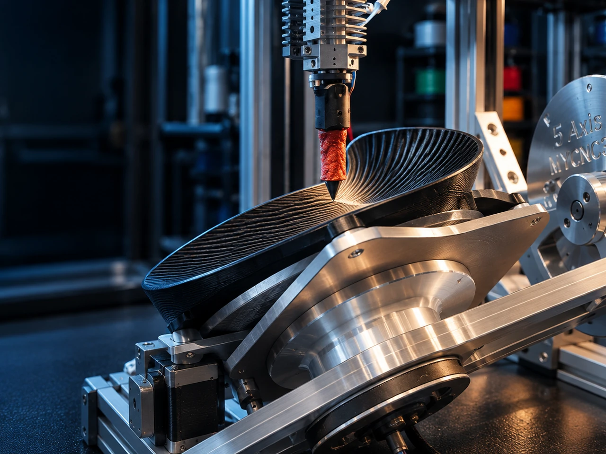

Machine kinematics
Evaluation of alternative multi-axis architectures and their practical manufacturing envelopes.
Developing machine architectures that extend polymer deposition beyond conventional planar motion.
MYCNC3D investigates multi-axis additive manufacturing architectures in which machine kinematics, deposition orientation and toolpath generation are designed as parts of the same system.

Project overview
The work has progressed beyond conceptual exploration into active development of machine architectures, kinematics, motion control and toolpath integration.
MYCNC3D is investigating additive-manufacturing systems in which additional degrees of freedom can control deposition orientation beyond conventional planar XY motion.
The research focuses on machine kinematics, coordinated axis motion, deposition orientation, calibration, coordinate transformation, tool clearance, machine limits and integration with advanced trajectory-generation software.
The objective is not simply to add more machine axes, but to develop architectures that enable useful manufacturing strategies that conventional planar FDM cannot provide.
Current work focuses on comparing multi-axis architectures and developing the software-to-machine workflow required for coordinated deposition.
Physical validation of a fully integrated multi-axis deposition system remains a forthcoming development milestone.
Why it matters
The orientation of the deposited bead influences geometry, accessibility, surface generation and potentially mechanical behaviour. Multi-axis motion creates the possibility of orienting deposition locally rather than forcing every region into the same global layer direction.
This freedom also creates engineering challenges: coordinate transformations, calibration, axis limits, machine clearance, collision risk and synchronisation between material flow and complex movement.
Current focus
Evaluation of alternative multi-axis architectures and their practical manufacturing envelopes.
Synchronisation of several axes while preserving smooth and controllable deposition.
Control of local tool and deposition orientation relative to the manufactured geometry.
Reliable geometric relationships between axes, tool and workpiece.
Integration of nozzle, toolhead and machine-envelope constraints.
Connecting machine capability with software that generates trajectories adapted to the selected kinematics.
Engineering approach
The development process combines kinematic modelling, machine configuration, toolpath generation and physical printing tests. Each layer of the system is evaluated against the others rather than developed in isolation.
Current status
The work is in active development across machine architecture, kinematics, motion control and toolpath integration. Physical validation of a fully integrated multi-axis deposition system remains a forthcoming milestone.
Next milestone
The next milestone is to converge toward a reference machine architecture with repeatable calibration, reliable coordinate transformation, controlled multi-axis motion and a stable software-to-machine workflow.
Progress toward VALIDATION will require physical demonstration of integrated multi-axis deposition across representative geometries, together with systematic handling of machine limits, tool clearance and collision constraints.
Integrated platform
Multi-axis capability is developed together with extrusion performance and advanced toolpath generation. The objective is an integrated manufacturing chain in which machine architecture and manufacturing strategy are designed to work together.
Collaboration
MYCNC3D is open to technical discussions with motion-control suppliers, robotics specialists, machine-tool partners, research organisations and industrial users interested in multi-axis polymer deposition.